VISSER / DESIGN ITERATION 02
Compact explanations.
19 editable Penpot screens, recomposed after feedback on oversized values and wasted space. These are design proposals, not an implemented Visser release. Open the Penpot page Visser — Iteration 02 · See the mechanism and its named prototype flow to follow the interactions.
Proposal document · Design and validation notes · Download screenshots
Start here: all studies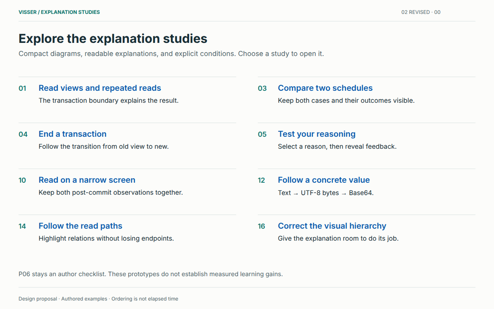
The mechanism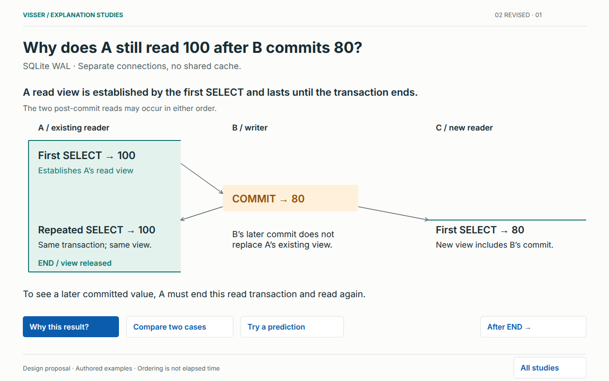
Why this result? Open explanation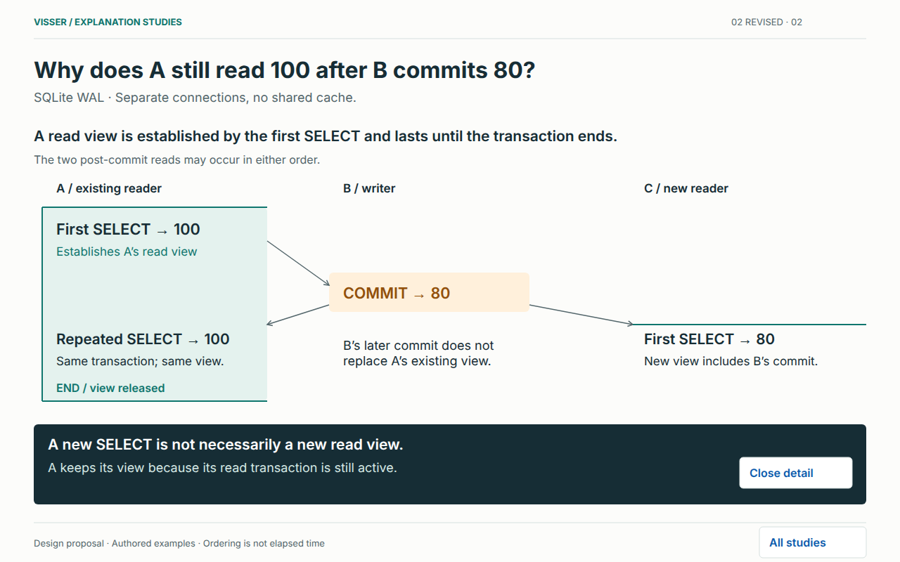
Paired cases: change one condition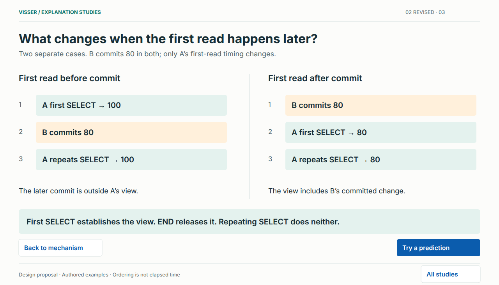
End the original transaction: now 80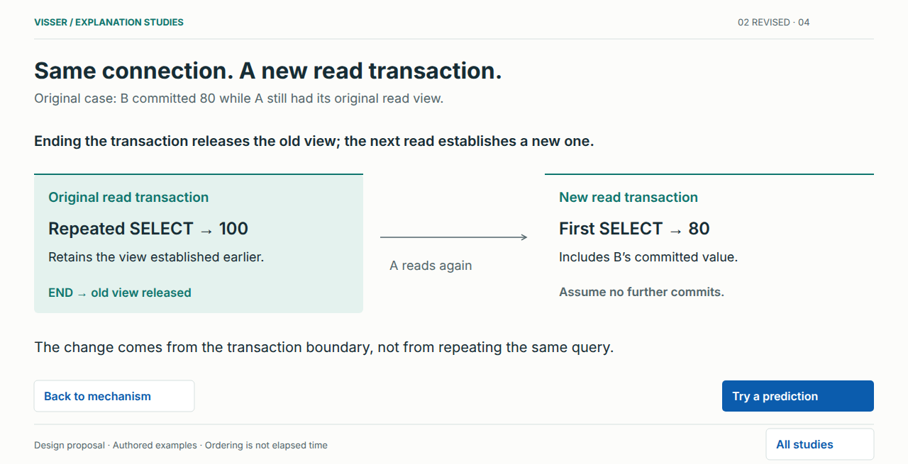
Prediction: no selection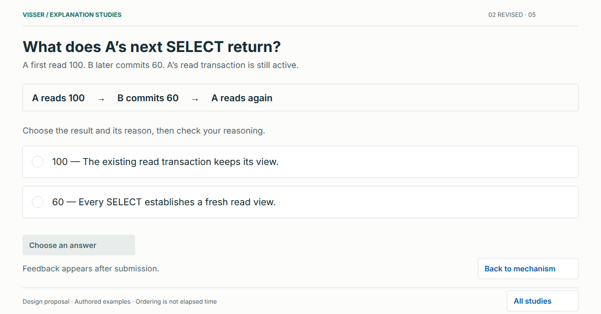
Prediction: 100 selected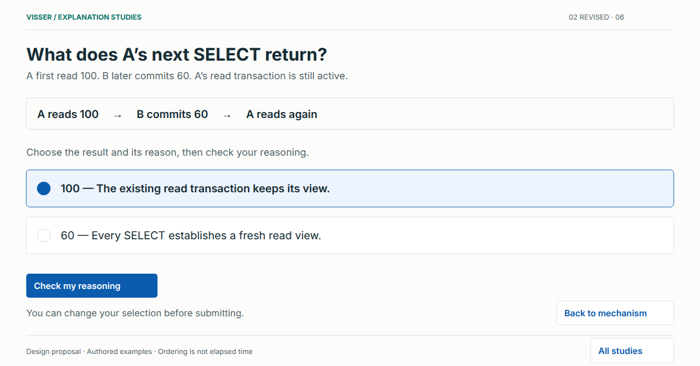
Prediction: 60 selected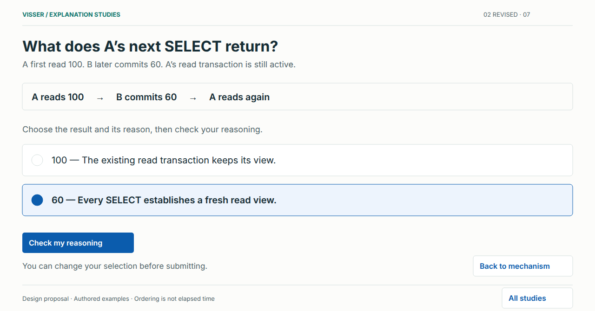
Correct reasoning feedback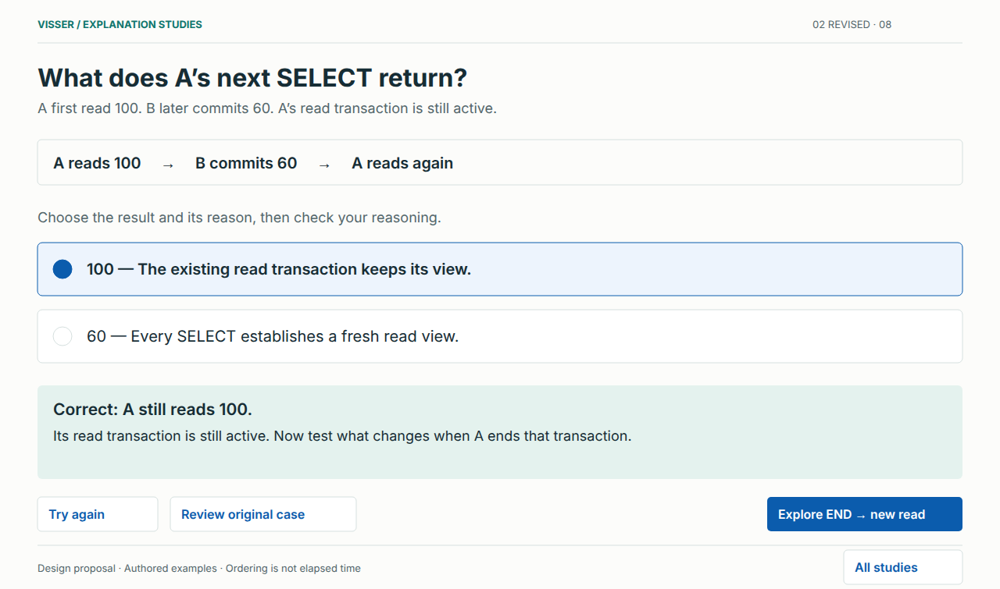
Correction for the selected reasoning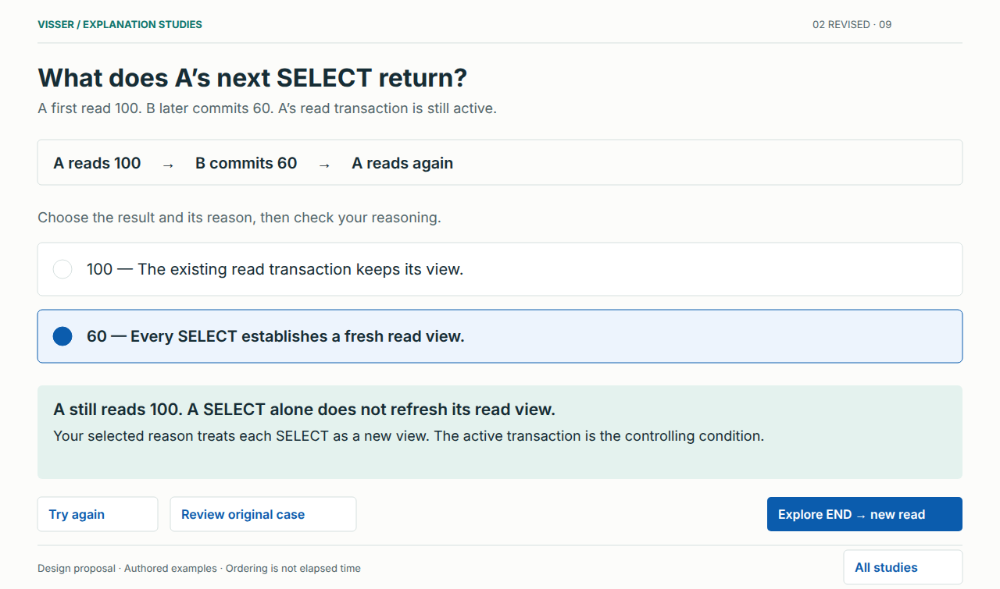
Mobile: 390 px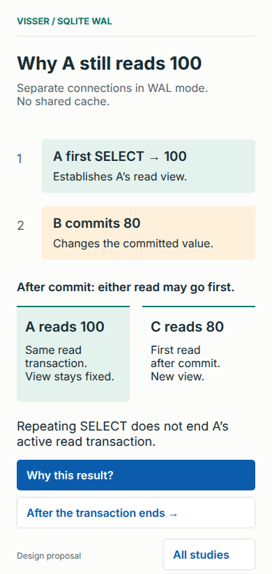
Mobile: explanation open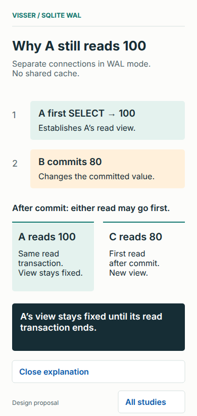
A concrete transformation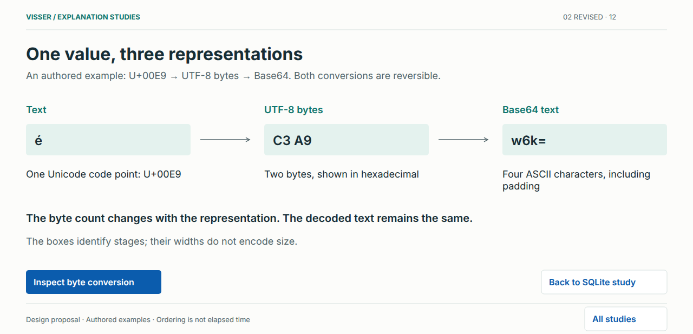
Byte conversion: detail open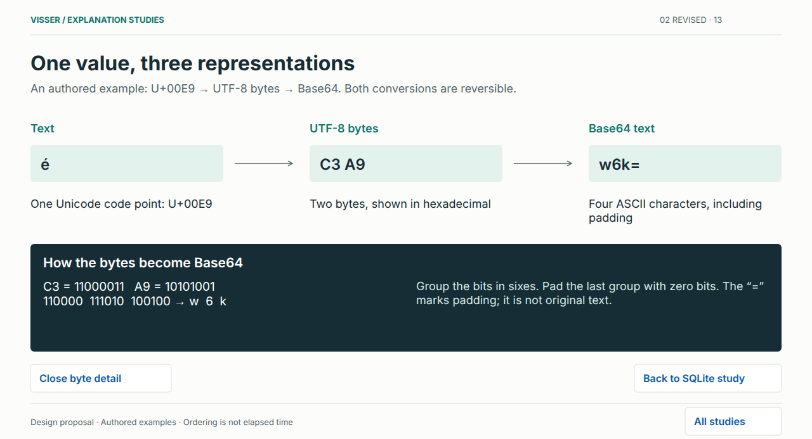
Walkthrough overview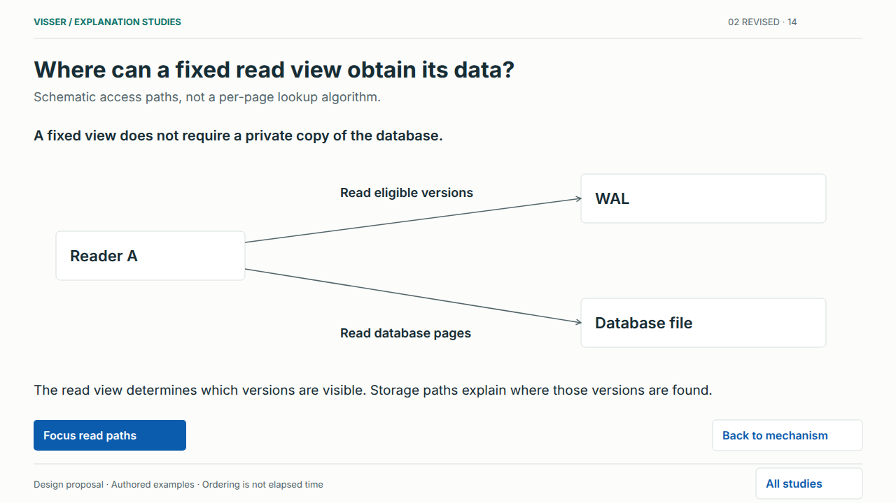
Walkthrough focus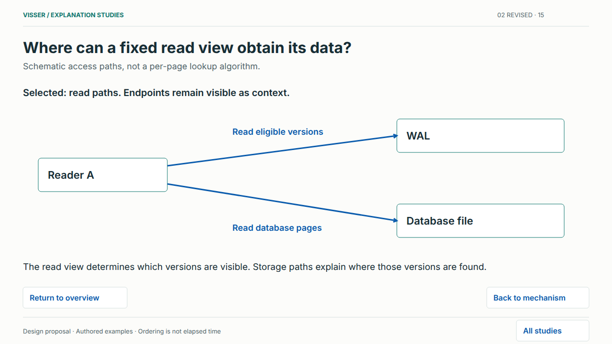
Correcting oversized value emphasis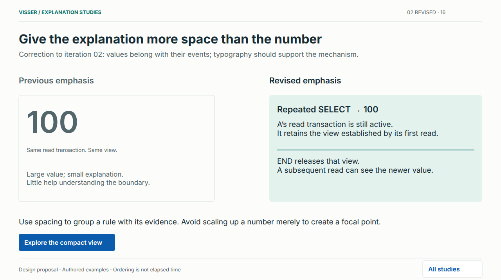
Prediction transfer: after END, now 60Mobile: new transaction, new read view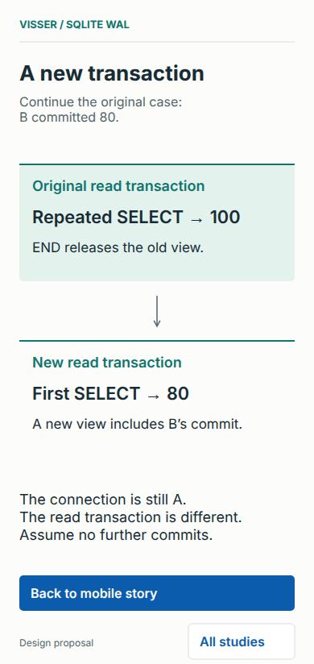